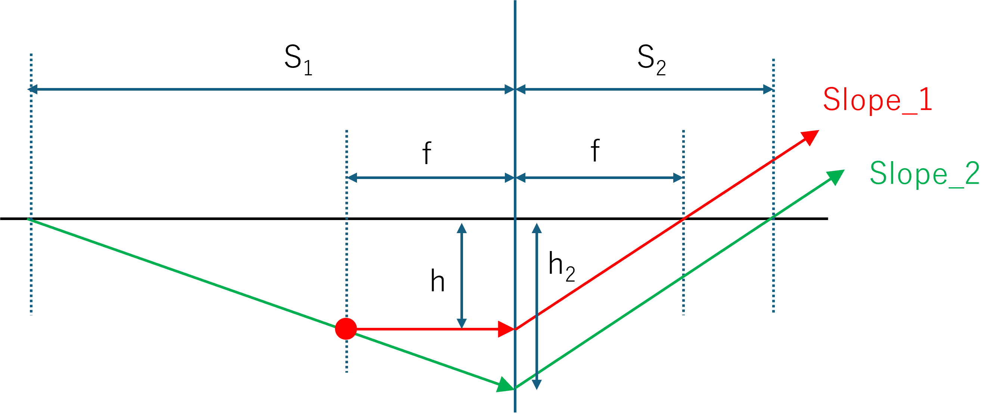

前のページでは，平行光を斜めに照射した場合，焦点面で集光する，という話をしましたが，ちょっと視点を変えて，
焦点面から発せられた光はレンズを通して平行光になるか？
を考えていきましょう．

焦点距離，f，の凸レンズ（中央の青縦線）を考えます．
焦点面のある位置から発せられた光はレンズを通して平行光になるか？ を検証していきます．
赤丸，から光が発せられたとします．
赤 ： 軸に対して平行
緑 ： 軸に対して非平行
とします．
緑の光線を左側に伸ばし， S1，で軸と交わるとします．
レンズの公式より，
\(\Large \frac{1}{S_1} + \frac{1}{S_2} = \frac{1}{f} \)
となります．ここで，傾きを考えると，
\(\Large Slope_1 = \displaystyle \frac{h}{f} \)
\(\Large Slope_2 = \displaystyle \frac{h_2}{S_2} \)
となります． ここで，
\(\Large \frac{h_2}{S_1} = \displaystyle \frac{h}{S_1 - f} \)
となるので，
\(\Large Slope_2 = \displaystyle \frac{h_2}{S_2} = \frac{h}{S_1 - f} \frac{S_1}{S_2} \)
\(\Large = \displaystyle \frac{S_1}{S_1 \cdot S_2 - S_2 \cdot f} \ h \)
となります． レンズの公式より，
\(\Large \displaystyle \frac{1}{S_1} + \frac{1}{S_2} = \frac{1}{f} \)
\(\Large \displaystyle S_1 + S_2 = S_1 \cdot S_2 \frac{1}{f} \)
\(\Large \displaystyle S_1 \cdot S_2 = S_1 \cdot f + S_2 \cdot f \)
となるので，
\(\Large \displaystyle Slope_2 = \frac{S_1}{S_1 \cdot S_2 - S_2 \cdot f} \ h \)
\(\Large \displaystyle = \frac{S_1}{S_1 \cdot f + S_2 \cdot f - S_2 \cdot f} \ h \)
\(\Large \displaystyle = \frac{S_1}{S_1 \cdot f } \ h = \frac{h}{ f } \)
\(\Large \displaystyle = Slope_1 \)
となり，平行となることがわかります．